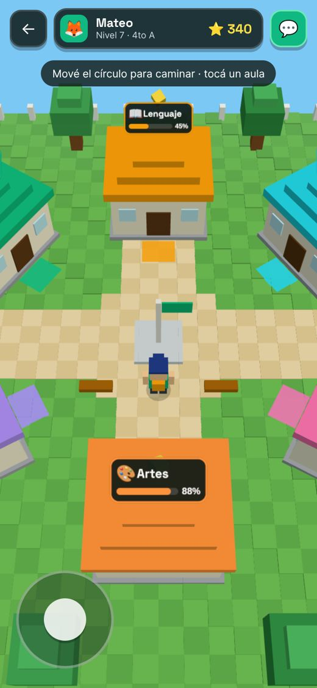
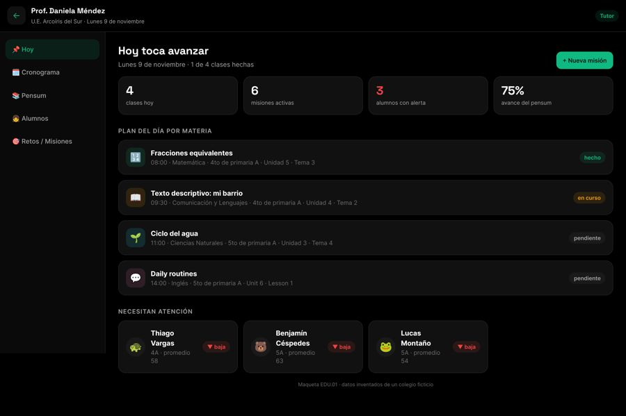
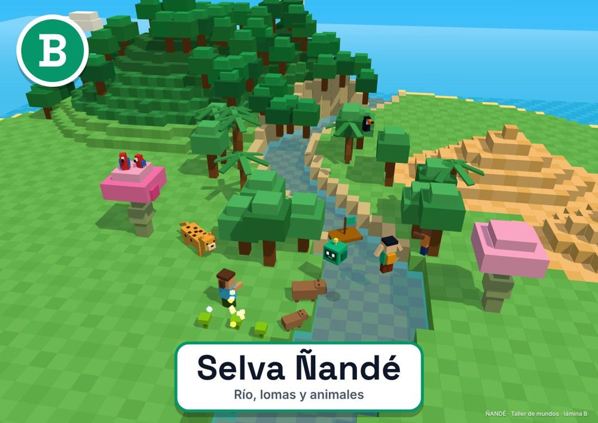

Un profe para cada niño. Gratis.
A tutor for every child. Free.
Tutores de inteligencia artificial que hablan con cada alumno de escuela pública, con nuestro acento, a su ritmo, y que nunca le dan la respuesta: le enseñan a encontrarla.
AI tutors that talk with every public-school student, in our own accent, at their own pace — and never give the answer: they teach the child to find it.

Por qué
Why
Bolivia es uno de los países con menos ingresos de Sudamérica. Muchas familias no pueden pagar clases particulares, y en las aulas públicas un solo docente atiende a muchos niños que aprenden de formas distintas.
Bolivia is one of the lowest-income countries in South America. Most families cannot afford private tutoring, and in public classrooms one teacher serves many children who learn in different ways.
de los niños de 10 años en América Latina y el Caribe no logra entender un texto simple (“pobreza de aprendizaje”), después de la pandemia.
of 10-year-olds in Latin America and the Caribbean cannot understand a simple text (“learning poverty”) after the pandemic.
niños de inicial y primaria en 533 escuelas públicas solo en el municipio de Santa Cruz de la Sierra.
pre-school and primary children in 533 public schools in the municipality of Santa Cruz de la Sierra alone.
al año es el bono escolar por alumno (~USD 43). No alcanza para útiles, y menos para un tutor.
per year is the state school bonus per student (~USD 43). It does not cover school supplies, let alone a tutor.
Bolivia ya repartió computadoras a escuelas, y muchas terminaron guardadas: sin contenido, sin mantenimiento y sin conexión. La lección de la región es clara: el aparato solo no mejora el aprendizaje; lo que funciona es un acompañamiento personalizado y guiado.
Bolivia has handed out computers to schools before, and many ended up stored away: no content, no maintenance, no connection. The lesson from the region is clear: devices alone don't improve learning; personalized, guided support does.
Qué hacemos
What we do
🎙️ La profe y el profe
🎙️ “La profe” and “el profe”
Dos tutores de IA por voz en vivo, con habla cruceña. Guían con preguntas y pistas paso a paso, se adaptan al nivel de cada niño y celebran cada avance.
Two live voice AI tutors with a local Santa Cruz accent. They guide with questions and step-by-step hints, adapt to each child's level and celebrate every step forward.
🧱 Las tareas son misiones
🧱 Homework becomes missions
Un mundo 3D de bloques donde cada misión abre lugares secretos y el curso entero desbloquea espacios en equipo. Sin rankings que humillen, sin compras, sin chat con extraños.
A blocky 3D world where each mission unlocks secret places and the whole class unlocks spaces together. No humiliating leaderboards, no purchases, no chat with strangers.
📶 Funciona sin internet
📶 Works offline
Una tablet por alumno con sus textos y cuadernos, que se actualiza cada año y sincroniza cuando hay Wi-Fi en la escuela.
One tablet per student with textbooks and notebooks, updated every school year, syncing when the school has Wi-Fi.
👩🏫 Docentes y familias
👩🏫 Teachers and families
El docente ve el avance y el perfil de aprendizaje de cada alumno. Los padres entienden cómo aprende su hijo y cómo ayudarlo en casa.
Teachers see each student's progress and learning profile. Parents understand how their child learns and how to help at home.

“Cada niño entiende de forma distinta. Si le enseñamos a cada uno a su manera, el nivel de aprendizaje va a ser mayor que el actual.”
“Every child understands differently. If we teach each one their own way, learning will reach a higher level than today.”
Fundador de ÑANDÉ, padre de dos alumnos
ÑANDÉ founder, father of two students
Evidencia
Evidence
- En Nigeria, 6 semanas de tutoría con IA en escuelas públicas lograron un avance que los investigadores comparan con 1,5–2 años de escolaridad normal. Banco Mundial, 2025
- In Nigeria, 6 weeks of AI tutoring in public schools produced gains researchers compare to 1.5–2 years of typical schooling. World Bank, 2025
- En India, un programa que se adapta al nivel de cada alumno mejoró mucho matemática y lenguaje, sobre todo en los más atrasados. Muralidharan y otros, AER 2019
- In India, software adapting to each student's level greatly improved math and language, especially for students furthest behind. Muralidharan et al., AER 2019
- Diseñamos con la ciencia del aprendizaje: repaso espaciado, pistas graduales y cooperación en vez de competencia.
- We design with learning science: spaced review, graduated hints and cooperation instead of competition.
Seguro para los niños
Safe for children
- A la IA nunca llegan nombres reales ni ubicaciones: solo un código anónimo.
- No real names or locations ever reach the AI — only an anonymous code.
- Mundos cerrados por curso; sin chat libre, sin mensajes privados.
- Class-only worlds; no open chat, no private messages.
- Límites diarios de uso y sin mecánicas adictivas.
- Daily usage limits and no addictive mechanics.
- Los tutores siempre dicen que son una IA.
- The tutors always say they are an AI.

Dónde estamos
Where we are
✅ Hoy
✅ Today
Tutor de voz en vivo funcionando y prototipo navegable del mundo del alumno, del docente, de los padres y de la dirección.
Live voice tutor working, plus a navigable prototype of the student world and the teacher, parent and principal views.
🔜 Siguiente
🔜 Next
Talleres de diseño con niños, prueba familiar y un piloto en un aula pública con un curso de comparación.
Co-design workshops with children, a family pilot and a one-classroom public-school pilot with a comparison group.
🎯 Meta
🎯 Goal
Que el municipio entregue una tablet con su profe a cada alumno de escuela pública, sin costo para las familias.
The municipality providing every public-school student with a tablet and their tutor, at no cost to families.